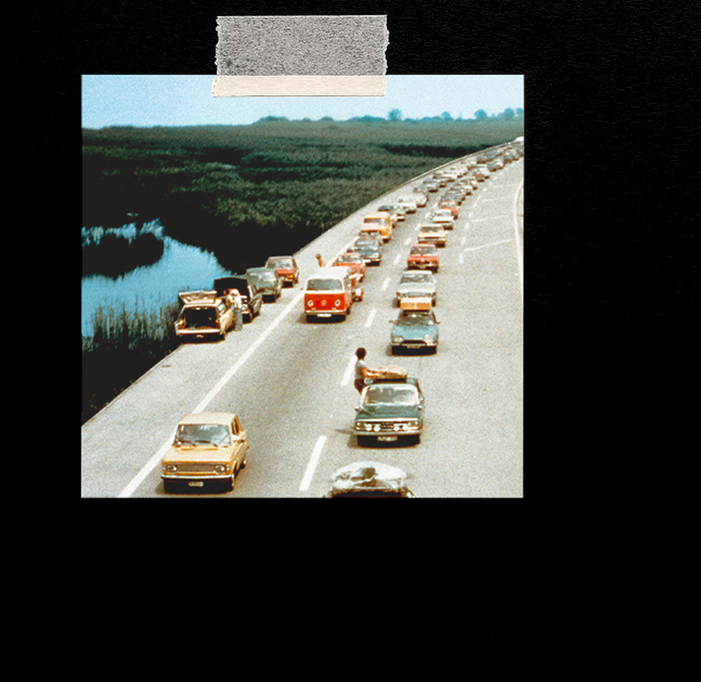
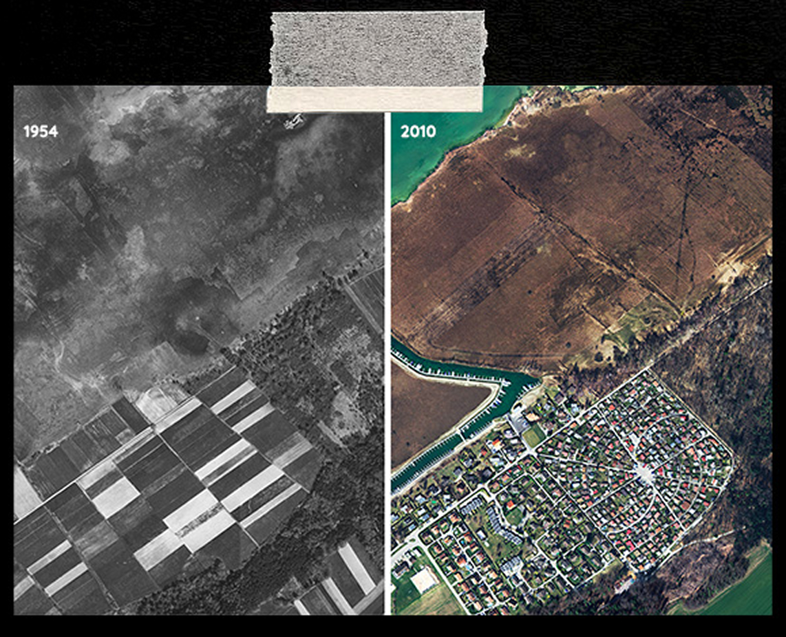
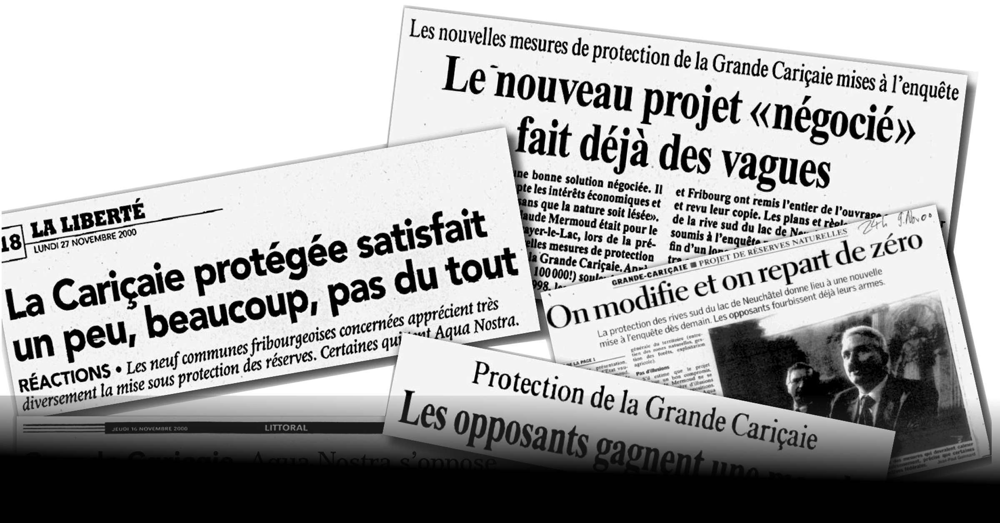
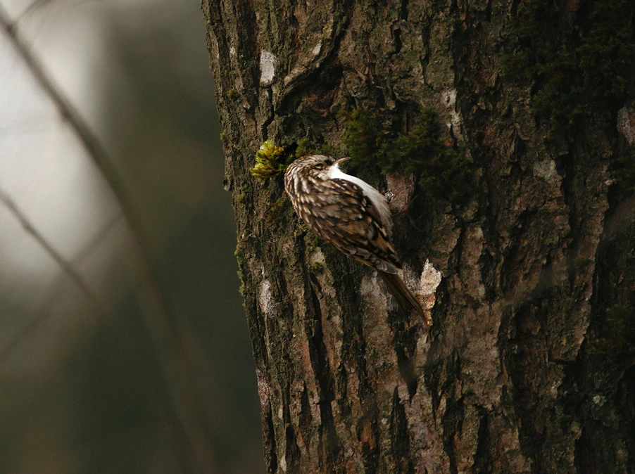
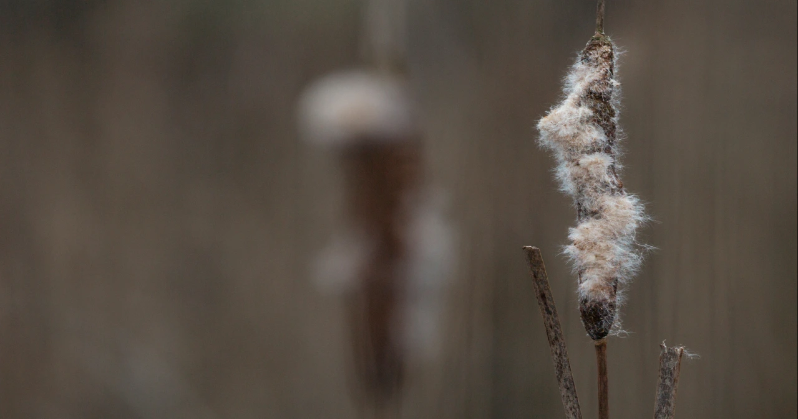
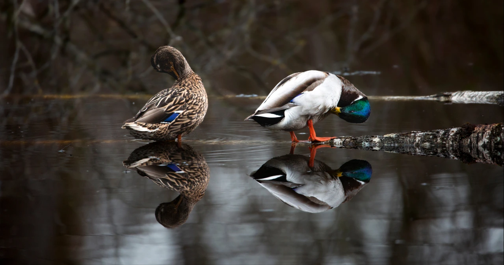

Affronter le climat
Dans un monde en constante accélération, où l’humain
occupe toujours plus d’espace, comment la nature fait-elle
face à ces transformations ?
Cette question a été posée à Pascal Balmer, garde-faune et
garde-pêche dans le canton de Fribourg.
Making-off
Ce documentaire a été co-réalisé avec Pauline Spicher dans le cadre d’un projet autour du thème « Affronter ».
Le sujet n’a pas été simple à aborder : nous avons eu beaucoup de peine à trouver des intervenants actifs dans la protection de la faune. J’ai pris en charge la recherche et la prise de contact avec ces personnes (appels, mails, recherches de terrain...) afin de trouver quelqu’un ayant travaillé dans la région de la Grande Cariçaie, un lieu qui s’est longtemps battu pour retrouver sa nature perdue.
J’ai également réalisé le sound design, le reste du tournage a été partagé : chacune derrière une caméra, afin de croiser nos regards et nos sensibilités. Un projet exigeant, mais profondément formateur.




Repérages


